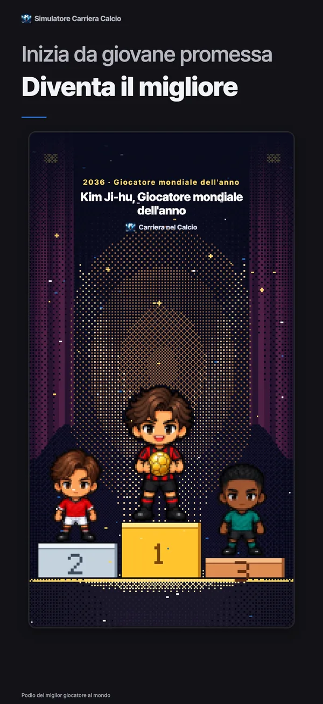
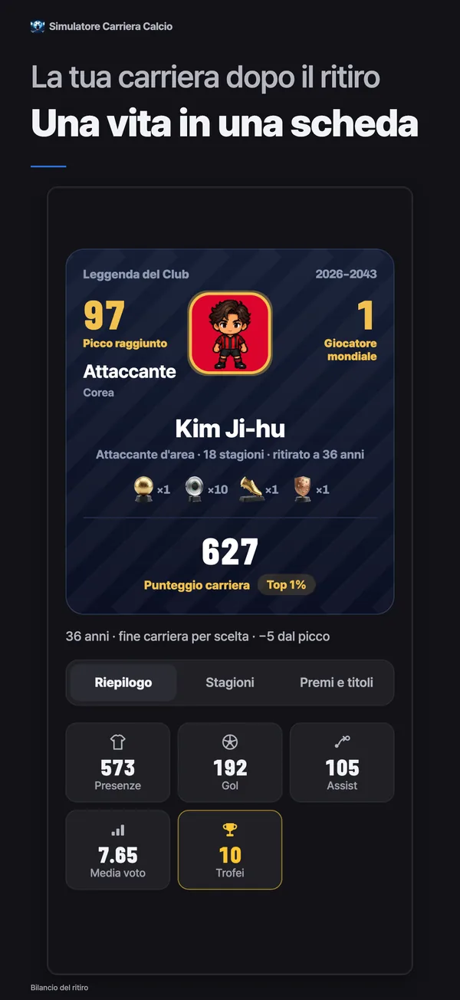
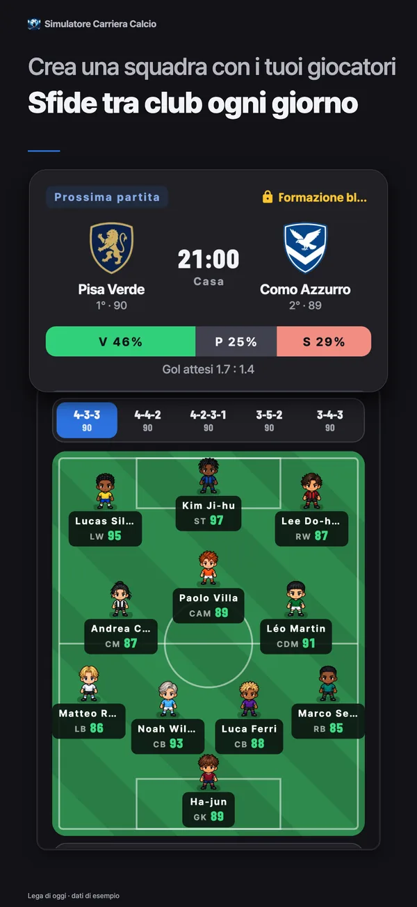
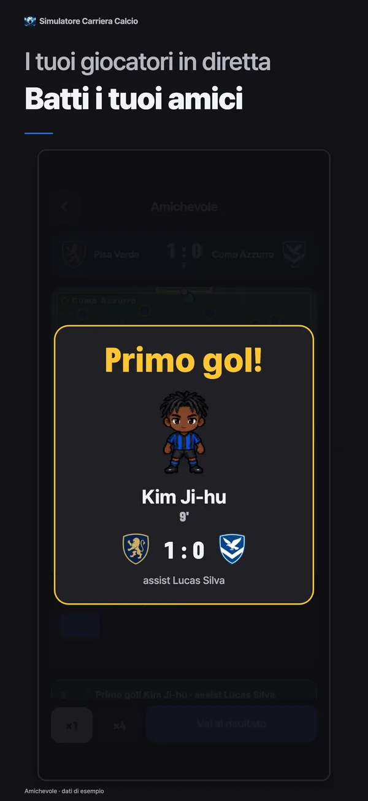
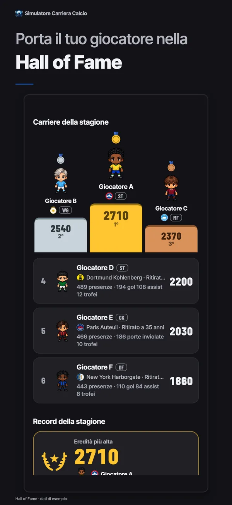
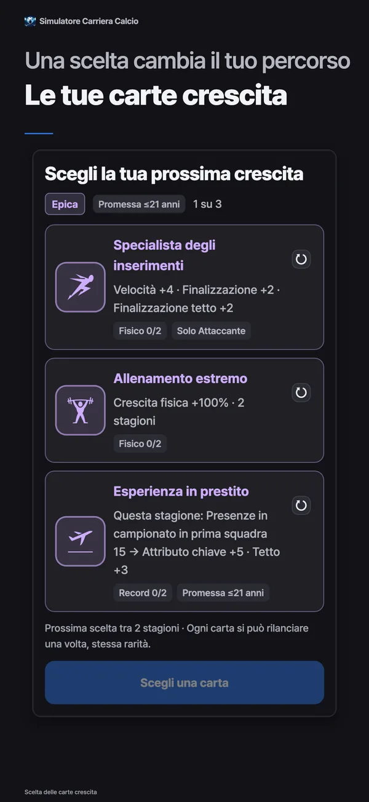

- YT Lab
- Simulatore Carriera Calcio

Simulatore Carriera Calcio La vita di un calciatore, dai diciassette anni al ritiro
Simulatore Carriera Calcio è un gioco di simulazione della carriera calcistica per dispositivi mobili, creato da YT Lab. A diciassette anni parti dal Settore giovanile, ti conquisti spazio dalla panchina della Prima squadra, cambi club, arrivi in nazionale e decidi quando ritirarti. Le Carte di crescita che scegli ogni due stagioni cambiano il tuo percorso. Dopo il ritiro, i tuoi giocatori formano la rosa del tuo club nella Lega settimanale.
Scegli la tua prossima crescita
27 anni · Attaccante · OVR 96Puoi rilanciare ogni carta una volta. La rarità resta la stessa.
Carte e calcoli sono quelli reali dell’app: qui un Attaccante di 27 anni già affermato ottiene il turno più raro, Legend. Anche i rilanci e le estrazioni successive usano le stesse carte e probabilità dell’app. Ogni prova ricomincia con lo stesso giocatore.

Download gratuito con acquisti in-app. Per iPhone e iPad con iOS 15 o successivo e Android 7.0 o successivo.
Vuoi provarlo prima di installarlo? Inizia subito nel browser
Ogni due stagioni. Tre carte. Una scelta.
Gli attributi crescono automaticamente mentre giochi. Le Carte di crescita aggiungono una scelta. All’inizio e poi ogni due stagioni scegli una di tre carte della stessa rarità e di famiglie diverse. Le rarità più alte hanno effetti maggiori. La prima carta è sempre Epica.
Più forte, da subito
Gli attributi aumentano appena scegli. La concentrazione paga dà +6 a un attributo chiave e +3 al suo tetto. Colmare le lacune aggiunge 4 sia all’attributo chiave più basso sia a quello di supporto più basso.
Spazio per crescere
Ogni attributo ha un tetto nascosto, dove la crescita automatica si ferma. Un po' di potenziale, Potenziale aperto e Salto di potenziale lo alzano. Le carte possono portarlo fino a 95.
Ricompense da conquistare in campo
Cacciatore di gol dà Finalizzazione +1 ogni 5 gol. Stella della partita aggiunge +2 a un attributo ogni 2 premi MOM. Pronto a salire dà +8 a un attributo chiave dopo 30 presenze. Devi guadagnarteli in campo.
Qualcosa in cambio di qualcosa
Scatto esplosivo dà Velocità +8 in cambio di Gioco aereo −3. Talento diabolico dà +12 al tetto di un attributo chiave e +10 al suo valore, ma costa −3 a un attributo di supporto. Ogni vantaggio ha un prezzo.
Più tempo in campo
Seconda maturità dimezza il declino per tre stagioni e allunga la carriera di 2 anni. Ultima fiamma dà +6 a tre attributi chiave, ma impone il ritiro a fine stagione.
Rilanci gratuiti
Una carta non ti convince? Rilanciala singolarmente. La rarità non cambia e la nuova carta avrà una famiglia diversa dalle altre due.
Dalla panchina al Pallone d’Oro
Non parti da titolare in massima serie. Passi dal Settore giovanile alla Seconda squadra e ti conquisti un posto dalla panchina della Prima squadra. In cima c’è il premio Giocatore mondiale dell'anno, assegnato ogni stagione al migliore al mondo. Le tue carte e i tuoi risultati decidono fin dove arriverai.
- 17anni
Settore giovanile
Inizi a diciassette anni nel Settore giovanile. Con il Pacchetto giovanili puoi partire già a quindici.
- 19entro questa età
Seconda squadra
Quando ti avvicini al livello della Prima squadra o compi diciannove anni, passi alla Seconda squadra. Le promozioni vengono decise a fine stagione.
- 16–21debutto secondo il campionato
Dalla panchina della Prima squadra al posto da titolare
L’età del debutto varia in base al campionato. Per arrivare in Prima squadra devi raggiungere i requisiti di età, abilità e voto stagionale. La fiducia dell’allenatore determina quanto giochi.
- Estatea fine stagione
Trasferimenti e rinnovi
Chiedi il trasferimento o scegli un’offerta, poi tratta con il tuo agente lo stipendio e clausole come Promessa da titolare o Clausola rescissoria.
- 18+in Prima squadra
Nazionale
I giocatori della Prima squadra dai diciotto anni possono essere convocati in nazionale. Il Torneo mondiale e i tornei continentali si alternano ogni due anni.
- 36–41secondo il ruolo
Il ritiro, e quello che resta
Di norma gli Esterni giocano fino a 36 anni e i Portieri fino a 41. Carte ed eventi possono allungare la carriera. Puoi anche decidere di ritirarti prima.
I tuoi giocatori ritirati diventano il tuo club
Conserva i giocatori ritirati nell’Archivio carriere e schierali nella rosa del tuo club nella Lega settimanale. Scegli modulo e tattiche con i calciatori che hai fatto crescere e affronta altri club ogni settimana. Non hai ancora giocatori ritirati? Puoi partecipare con quelli di base.
Una stagione in una settimana
Il lunedì prepari la rosa, dal martedì al venerdì giochi il campionato. Il sabato si disputano i gironi di coppa e la domenica si passa alla fase a eliminazione diretta.
Tra promozioni e retrocessioni
I risultati della settimana decidono se sali o scendi di divisione. Parti dalle divisioni inferiori e punta alla Classe mondiale.
Sfide tra amici
Aggiungi gli amici tramite codice, scegli modulo e tattiche e sfidali in amichevole. Hai perso? Puoi rifarti con una rivincita.
Sfida del giorno
Tutti partono dallo stesso giocatore e lo fanno crescere per otto stagioni. Punta al punteggio più alto prima della chiusura della classifica.
Gioca un mese. Scopri quanto sei cresciuto.
Una stagione dura dieci mesi, da agosto a maggio, e comprende 38 partite. Presenze, gol, assist, porte inviolate, MOM e voti alimentano la crescita mensile. Ogni aumento è mostrato in numeri. Avanza un mese alla volta oppure lascia scorrere la stagione in automatico.
Crescita mensileDribbling 57 → 58 +1
Un grande mese può valerti Giocatore del mese, Squadra del mese o, se sei Portiere, Parata del mese. Contano i risultati, senza estrazioni nascoste. A fine stagione puoi puntare a Capocannoniere, Squadra della stagione, Giocatore dell'anno e persino Giocatore mondiale dell'anno.
Dentro il gioco






Un altro modo di vivere il calcio
La carriera di un solo calciatore
Nella carriera del calciatore non ci sono schermate della rosa, lavagne tattiche o budget trasferimenti. È l’allenatore a decidere quanto giochi e, quando cambia, può cercare un tipo di giocatore diverso. La gestione del tuo club ha uno spazio a sé, nella Lega settimanale.
Le probabilità, prima della scelta
Nelle situazioni che incontri durante la stagione, ogni scelta mostra prima le probabilità dei tre esiti con barre e percentuali. Puoi anche vedere quanto attributi, fiducia dell’allenatore, condizione fisica e Carte di crescita hanno influito su quei numeri.
Una carriera diversa in ogni campionato
Da Inghilterra, Spagna, Germania, Italia e Francia a Corea, Giappone e Sud America. Età del debutto, stipendi e limiti agli stranieri cambiano da un campionato all’altro. Campionati, club, giocatori e allenatori sono tutti inventati.
I tuoi record restano
Restano le tue statistiche totali e una valutazione su sei assi: Qualità, Rendimento, Continuità, Premi, Trofei e Palcoscenico. Scopri in quale percentuale dei migliori rientri rispetto all’insieme delle carriere. Le carriere concluse entrano nella classifica stagionale dei giocatori e nella Hall of Fame.
Domande frequenti
- È gratuito?
- Puoi scaricare il gioco gratis e arrivare fino al ritiro. Anche le Carte di crescita e i rilanci sono gratuiti. Gli acquisti facoltativi comprendono Rimuovi la pubblicità, Pacchetto ruoli, Pacchetto giovanili, Pacchetto sostenitore, oro e ticket per rilanciare. I lanci degli attributi iniziali hanno le stesse probabilità, che siano gratuiti, ottenuti con pubblicità o con un ticket.
- Posso giocare senza connessione?
- La carriera e i salvataggi restano sul dispositivo, quindi puoi giocare offline. Serve una connessione per classifiche, Lega settimanale, Sfide tra amici, Sfida del giorno, acquisti, uso dell’oro e trasferimenti su un altro dispositivo.
- Posso giocare su PC o nel browser?
- Su iPhone, iPad e Android giochi nell’app fino al ritiro. Dal browser del PC o del telefono puoi provare gratis le prime cinque stagioni dello stesso gioco con la versione di prova web, senza installare nulla.
- Quali ruoli posso scegliere?
- Portiere, Difensore, Centrocampista, Esterno e Attaccante. Portiere e Attaccante sono gratuiti; il Pacchetto ruoli sblocca gli altri tre. Ogni ruolo offre sette stili di gioco, per un totale di 35, tutti gratuiti.
- Quante carriere posso giocare contemporaneamente?
- Hai tre slot carriera per far crescere tre calciatori contemporaneamente. La nazionalità determina la tua nazionale; per il club di partenza scegli tra le proposte in patria e all’estero.
- Ci sono giocatori o club reali?
- No. Tutti i campionati, club, giocatori e allenatori del gioco sono inventati.
- Il mio nome sarà visibile in classifica?
- Le carriere concluse appaiono in classifica, ma puoi disattivare la partecipazione in qualsiasi momento. I nomi modificati da te diventano pubblici solo con il tuo consenso.